✎ Edit the text of this page opens its markdown file on GitHub; once saved, the site is rebuilt within a few minutes
Kids&Us Manresa scouting report (Liga Endesa + EuroCup)
BC Roma before this game: pre-game snapshot.
Oct 18, 2026 · Author: Giulia Martini
Tuesday's game: key points
Without Allen and Villar, Manresa lose 25.9 of their 87.0 points per game and their top scorer by PIR (20.4). They are 0-2 without Allen this season, scoring 82.0 per game against 89.0 with him.
-
Likely starters: last game, also without both, opened with Agbo / Benitez / Minchev / Notae / Ongenda. That unit is +5 in 5.1 minutes (one game).
-
Scoring load: Notae (13.7), Oriola (12.0, only 3 GP), Ongenda (10.1) and Agbo (9.0, 42% from 3 on 5.4 attempts per game) carry it.
-
Ball handling: creation moves to Bassas (4.5 ast) and Benitez (4.0 ast). Bassas turns it over on 32.6% of his possessions and shoots 24% from the field (4.2 attempts per game).
-
Shot profile without Allen and Villar: 65.6% at the rim (103/157), 25.8% from 3 at the top (8/31), 43.3% from the right wing (13/30) and 18.9% from the left wing (7/37).
-
Defence: Manresa concede 99.1 points per game (103.0 in Liga Endesa) and are 1-6 overall.
-
Lineups: the most-used five (+37 per 40) includes both absent players, so Tuesday's rotation has little shared history.
Based solely on the data (7 games, small sample), with no assessment of plays or tactics. Percentages on low attempt volumes are not commented.
Roster
Manresa most likely lose their primary scorer for Tuesday: Timmy Allen (21.4 pts) and Rafael Villar are both out. Players are ordered by position (PG, SG, SF, PF, C), then by minutes per game.
| Player | Pos | Ht (cm) | GP | MIN | PTS | REB | AST | FG% (FGA) | 3P% (3PA) | FT% (FTA) | PPG ACB | PPG EC |
|---|---|---|---|---|---|---|---|---|---|---|---|---|
| Rafael Villar (OUT) | PG | 191 | 6 | 19.2 | 4.5 | 1.8 | 3.3 | 46 (4.0) | 17 (2.0) | 43 (1.2) | 7.0 | 2.0 |
| Hugo Benitez | PG | 192 | 4 | 19.2 | 8.2 | 1.5 | 4.0 | 54 (6.5) | 17 (1.5) | 50 (2.0) | 7.3 | 11.0 |
| Ferran Bassas | PG | 181 | 6 | 19.0 | 3.7 | 2.0 | 4.5 | 24 (4.2) | 16 (3.2) | 78 (1.5) | 1.8 | 7.5 |
| JD Notae | SG | 187 | 7 | 21.2 | 13.7 | 2.0 | 2.4 | 45 (12.0) | 29 (5.0) | 71 (2.0) | 13.0 | 14.7 |
| Lukasz Kolenda | SG | 195 | 6 | 19.1 | 8.2 | 2.2 | 1.8 | 41 (6.2) | 28 (3.0) | 82 (2.8) | 10.3 | 6.0 |
| Chibuzo Agbo | SF | 200 | 7 | 20.3 | 9.0 | 2.1 | 0.4 | 44 (6.9) | 42 (5.4) | 62 (1.1) | 10.2 | 7.3 |
| Pablo Tamba | SF | 200 | 7 | 13.1 | 4.7 | 2.6 | 0.6 | 68 (2.6) | 33 (0.9) | 42 (1.7) | 4.5 | 5.0 |
| Timmy Allen (OUT) | PF | 198 | 5 | 25.7 | 21.4 | 4.2 | 2.0 | 54 (12.6) | 46 (4.8) | 76 (7.4) | 20.5 | 22.0 |
| Yordan Minchev | PF | 205 | 7 | 17.5 | 5.4 | 5.6 | 1.3 | 37 (5.9) | 23 (1.9) | 42 (1.7) | 7.2 | 3.0 |
| Eric Vila | PF | 209 | 5 | 12.2 | 1.8 | 2.6 | 0.6 | 21 (2.8) | 0 (2.0) | 75 (0.8) | 1.7 | 2.0 |
| Pierre Oriola | C | 208 | 3 | 19.6 | 12.0 | 6.0 | 0.7 | 50 (7.3) | 0 (0.7) | 70 (6.7) | 11.5 | 13.0 |
| Nick Ongenda | C | 211 | 7 | 18.8 | 10.1 | 3.6 | 1.0 | 58 (6.9) | – (0.0) | 65 (3.3) | 10.2 | 10.0 |
Profiles
-
Hugo Benitez: main creator
-
Ferran Bassas: main creator
-
JD Notae: volume shooter from 3 (5.0 att, 29%)
-
Chibuzo Agbo: volume shooter from 3 (5.4 att, 42%)
-
Timmy Allen (OUT): primary scorer; volume shooter from 3 (4.8 att, 46%); turnover-prone (2.6)
-
Pierre Oriola: rebounder
-
Role players: Villar (OUT), Kolenda, Tamba, Minchev, Vila, Ongenda
Height in cm from the EuroLeague roster; position from ACB role / EuroLeague roster. Per-game stats combine Liga Endesa and EuroCup. Shooting attempts per game in brackets (Synergy team box score); percentages on low attempt volumes are not commented. Based solely on the data, with no assessment of plays or tactics.
Assists
Bassas is the main passer (24 assisted baskets) and Ongenda the main finisher (22 received). Villar to Allen (5) was a top combination, and both are out on Tuesday.
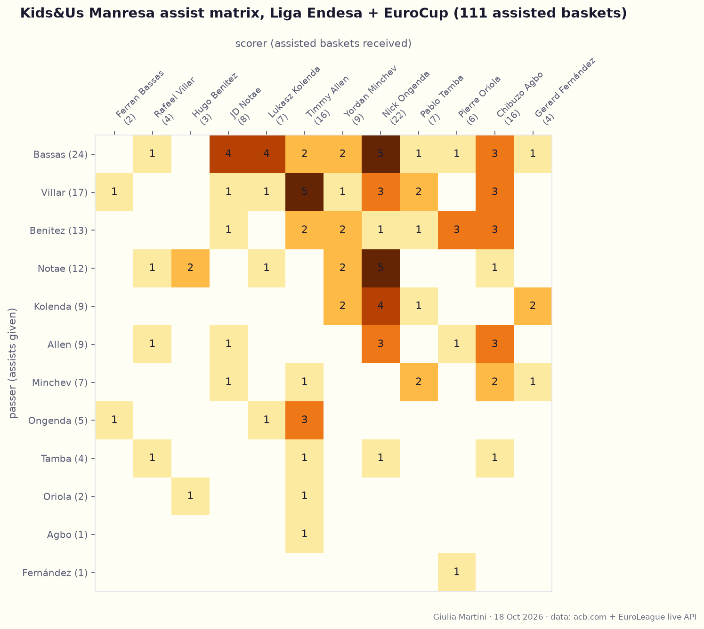
Passer (rows) to scorer (columns): 111 assisted baskets linked from the play-by-play, about 90% of box-score assists.
| Passer → scorer | Assisted baskets |
|---|---|
| Ferran Bassas → Nick Ongenda | 5 (transition or short roll) |
| JD Notae → Nick Ongenda | 5 |
| Ferran Bassas → Lukasz Kolenda | 4 |
| Ferran Bassas → JD Notae | 4 |
| Benitez → Agbo | 3 (catch and shoot 3P) |
| Benitez → Oriola | 5 (transition or short roll) |
Turnovers
Manresa average 13.9 turnovers per game, 15.0% of their possessions. Allen has the most per game (2.6, out on Tuesday); Bassas has the highest rate, 32.6% of his possessions.
Struggles when trapped after a P&R, or the screener defense commits.
Notae is also prone to turnovers.
Lineups (work in progress)
The most-used five (Agbo / Notae / Ongenda / Villar / Allen, +37 per 40) cannot play on Tuesday.
Most used line-up without Villar and Allen (17 possessions)
#6 Bassas
#8 Tamba
#11 Agbo
#13 Notae
#91 Minchev
Notae often as primarily ball handler, looking for a quick shot after an initial high P&R.
Other lineups without Villar and Allen (12 and 10 possessions)
#2 Benitez
#11 Agbo
#13 Notae
#14 Ongenda
#91 Minchev
#4 Vila
#6 Bassas
#11 Agbo
#13 Notae
#14 Ongenda
Slower line-up in offense, set plays
Shots analysis
Chibuzo Agbo
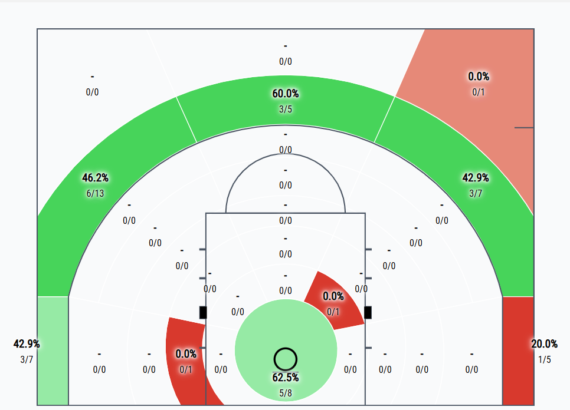
Very good percentages also guarded, catch and shoot primarily
JD Notae
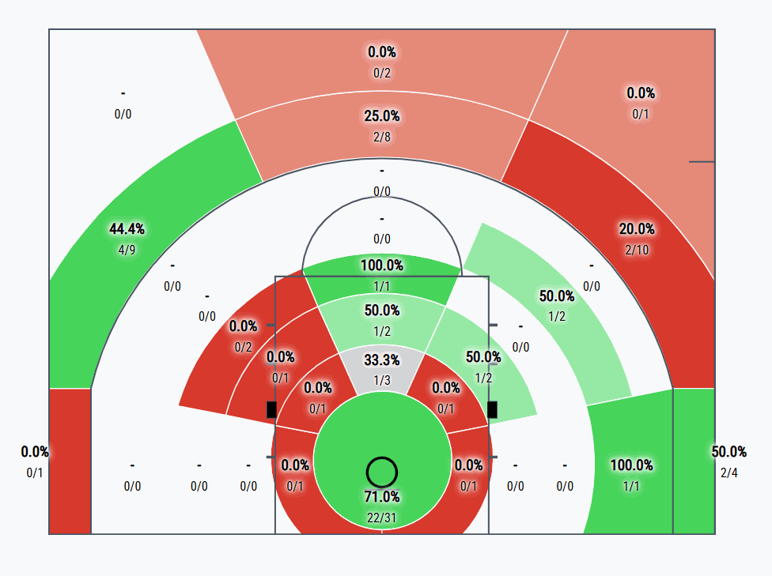
Mid-range shots are mainly results from drives after P&R where he tries to get to the rim even in crowded situations.
Team without Allen and Villar
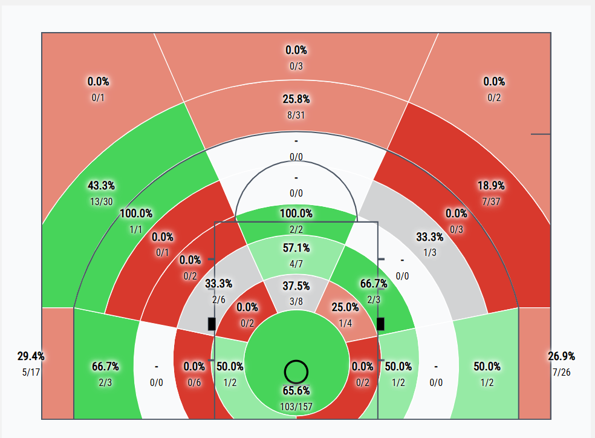
Good percentages from 3P right wing, poor on the left.
Automatic data report
Generated from the data by notebooks/manresa_report.py; it repeats some of the sections above with the full figures.
Prepared for BC Roma. Data as of 2026-10-18: 7 games (4 Liga Endesa, 3 EuroCup). Sources: acb.com live stats, EuroLeague live API. Small sample, read as tendencies.
Availability: out of the last game (2026-10-17, Liga Endesa vs Unicaja): Timmy Allen, Rafael Villar, Lukasz Kolenda.
Team snapshot
| GP | W-L | PPG | Opp PPG | |
|---|---|---|---|---|
| EuroCup | 3 | 1-2 | 89.0 | 94.0 |
| Liga Endesa | 4 | 0-4 | 85.5 | 103.0 |
| Total | 7 | 1-6 | 87.0 | 99.1 |
Results
| Comp | Opponent | H/A | Score |
|---|---|---|---|
| Liga Endesa | Surne Bilbao | A | 92-107 |
| Liga Endesa | Río Breogán | H | 95-101 |
| Liga Endesa | Real Madrid | A | 83-120 |
| Liga Endesa | Unicaja | H | 72-84 |
| EuroCup | Paok Thessaloniki | A | 78-93 |
| EuroCup | Ratiopharm Ulm | H | 101-89 |
| EuroCup | Bahcesehir College Istanbul | A | 88-100 |
Top 12 by total minutes
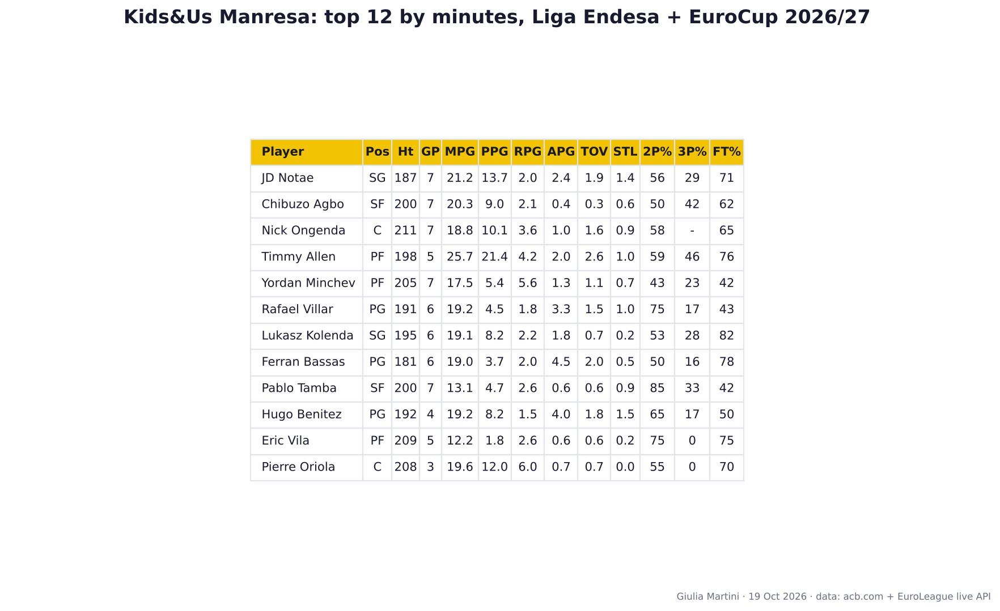
Height in cm (EuroLeague roster), position from ACB role / EuroLeague roster. PPG split: Liga Endesa / EuroCup.
- JD Notae (SG, 187 cm, 7 GP): 21.2 min, 13.7 pts, 2.0 reb, 2.4 ast, FG 45% / 3P 29% / FT 71%; PPG 13.0 ACB / 14.7 EC. Volume shooter from 3 (5.0 att, 29%).
- Chibuzo Agbo (SF, 200 cm, 7 GP): 20.3 min, 9.0 pts, 2.1 reb, 0.4 ast, FG 44% / 3P 42% / FT 62%; PPG 10.2 ACB / 7.3 EC. Volume shooter from 3 (5.4 att, 42%).
- Nick Ongenda (C, 211 cm, 7 GP): 18.8 min, 10.1 pts, 3.6 reb, 1.0 ast, FG 58% / 3P - / FT 65%; PPG 10.2 ACB / 10.0 EC. Role player.
- Timmy Allen (PF, 198 cm, 5 GP): 25.7 min, 21.4 pts, 4.2 reb, 2.0 ast, FG 54% / 3P 46% / FT 76%; PPG 20.5 ACB / 22.0 EC. Primary scorer, volume shooter from 3 (4.8 att, 46%), turnover-prone (2.6).
- Yordan Minchev (PF, 205 cm, 7 GP): 17.5 min, 5.4 pts, 5.6 reb, 1.3 ast, FG 37% / 3P 23% / FT 42%; PPG 7.2 ACB / 3.0 EC. Role player.
- Rafael Villar (PG, 191 cm, 6 GP): 19.2 min, 4.5 pts, 1.8 reb, 3.3 ast, FG 46% / 3P 17% / FT 43%; PPG 7.0 ACB / 2.0 EC. Role player.
- Lukasz Kolenda (SG, 195 cm, 6 GP): 19.1 min, 8.2 pts, 2.2 reb, 1.8 ast, FG 41% / 3P 28% / FT 82%; PPG 10.3 ACB / 6.0 EC. Role player.
- Ferran Bassas (PG, 181 cm, 6 GP): 19.0 min, 3.7 pts, 2.0 reb, 4.5 ast, FG 24% / 3P 16% / FT 78%; PPG 1.8 ACB / 7.5 EC. Main creator.
- Pablo Tamba (SF, 200 cm, 7 GP): 13.1 min, 4.7 pts, 2.6 reb, 0.6 ast, FG 68% / 3P 33% / FT 42%; PPG 4.5 ACB / 5.0 EC. Role player.
- Hugo Benitez (PG, 192 cm, 4 GP): 19.2 min, 8.2 pts, 1.5 reb, 4.0 ast, FG 54% / 3P 17% / FT 50%; PPG 7.3 ACB / 11.0 EC. Main creator, weak at the line (50%).
- Eric Vila (PF, 209 cm, 5 GP): 12.2 min, 1.8 pts, 2.6 reb, 0.6 ast, FG 21% / 3P 0% / FT 75%; PPG 1.7 ACB / 2.0 EC. Role player.
- Pierre Oriola (C, 208 cm, 3 GP): 19.6 min, 12.0 pts, 6.0 reb, 0.7 ast, FG 50% / 3P 0% / FT 70%; PPG 11.5 ACB / 13.0 EC. Rebounder.
Lineups
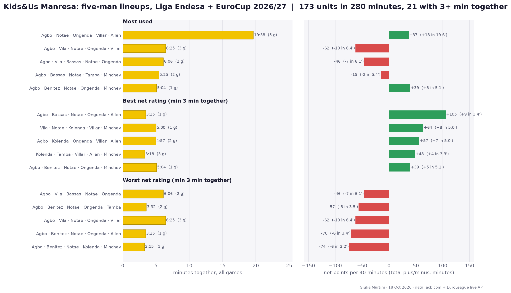
Five-man units rebuilt from substitutions, both competitions combined; best/worst need 3+ minutes together. Net rating = point differential per 40 minutes. 173 different units in 280 minutes.
Most used
- Agbo / Notae / Ongenda / Villar / Allen: 19.6 min, +18 (+37 per 40), 5 games
- Agbo / Vila / Notae / Ongenda / Villar: 6.4 min, -10 (-62 per 40), 3 games
- Agbo / Vila / Bassas / Notae / Ongenda: 6.1 min, -7 (-46 per 40), 2 games
- Agbo / Bassas / Notae / Tamba / Minchev: 5.4 min, -2 (-15 per 40), 2 games
- Agbo / Benitez / Notae / Ongenda / Minchev: 5.1 min, +5 (+39 per 40), 1 game
Most effective
- Agbo / Bassas / Notae / Ongenda / Allen: 3.4 min, +9 (+105 per 40), 1 game
- Vila / Notae / Kolenda / Villar / Minchev: 5.0 min, +8 (+64 per 40), 1 game
- Agbo / Kolenda / Ongenda / Villar / Allen: 5.0 min, +7 (+57 per 40), 2 games
- Kolenda / Tamba / Villar / Allen / Minchev: 3.3 min, +4 (+48 per 40), 3 games
- Agbo / Benitez / Notae / Ongenda / Minchev: 5.1 min, +5 (+39 per 40), 1 game
Least effective
- Agbo / Vila / Bassas / Notae / Ongenda: 6.1 min, -7 (-46 per 40), 2 games
- Agbo / Benitez / Notae / Ongenda / Tamba: 3.5 min, -5 (-57 per 40), 2 games
- Agbo / Vila / Notae / Ongenda / Villar: 6.4 min, -10 (-62 per 40), 3 games
- Agbo / Benitez / Notae / Ongenda / Allen: 3.4 min, -6 (-70 per 40), 1 game
- Agbo / Benitez / Notae / Kolenda / Minchev: 3.2 min, -6 (-74 per 40), 1 game
Starting fives and absences
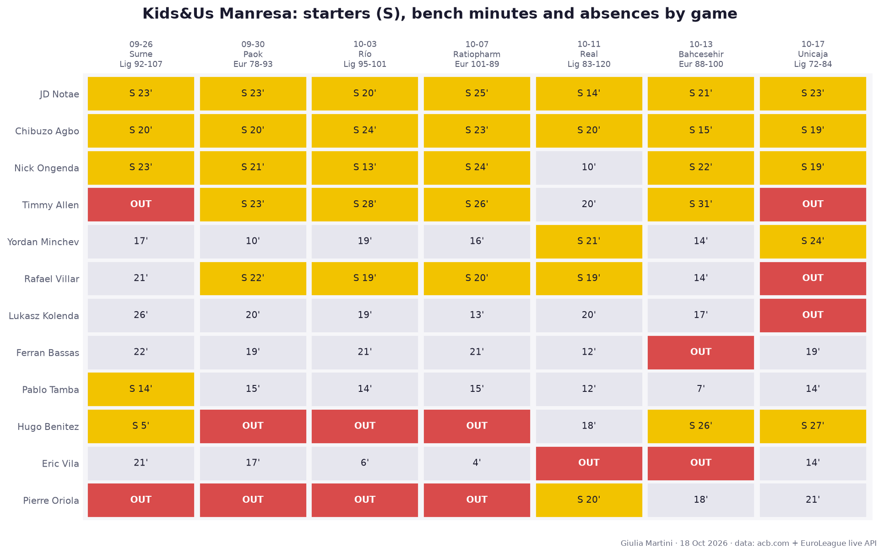
Gold = starter (S, minutes), grey = bench minutes, red = rotation player (top 12 by minutes) not on the game sheet (injury, rest or selection: the reason is not in the data).
| Date | Comp | Opponent | H/A | Score | Starters | Out |
|---|---|---|---|---|---|---|
| 2026-09-26 | Liga Endesa | Surne Bilbao | A | 92-107 | Agbo / Benitez / Notae / Ongenda / Tamba | Timmy Allen, Pierre Oriola |
| 2026-09-30 | EuroCup | Paok Thessaloniki | A | 78-93 | Agbo / Allen / Notae / Ongenda / Villar | Hugo Benitez, Pierre Oriola |
| 2026-10-03 | Liga Endesa | Río Breogán | H | 95-101 | Agbo / Allen / Notae / Ongenda / Villar | Hugo Benitez, Pierre Oriola |
| 2026-10-07 | EuroCup | Ratiopharm Ulm | H | 101-89 | Agbo / Allen / Notae / Ongenda / Villar | Hugo Benitez, Pierre Oriola |
| 2026-10-11 | Liga Endesa | Real Madrid | A | 83-120 | Agbo / Minchev / Notae / Oriola / Villar | Eric Vila |
| 2026-10-13 | EuroCup | Bahcesehir College Istanbul | A | 88-100 | Agbo / Allen / Benitez / Notae / Ongenda | Ferran Bassas, Eric Vila |
| 2026-10-17 | Liga Endesa | Unicaja | H | 72-84 | Agbo / Benitez / Minchev / Notae / Ongenda | Timmy Allen, Rafael Villar, Lukasz Kolenda |
5 different starting fives in 7 games; the most used (3 games): Agbo / Allen / Notae / Ongenda / Villar.
Assist matrix
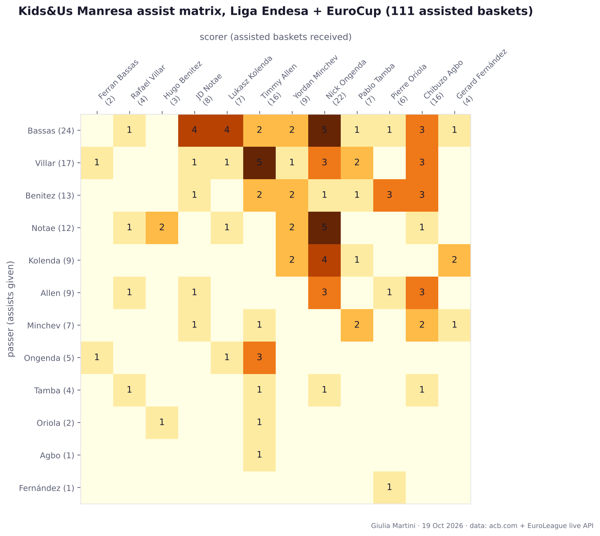
Passer (rows) to scorer (columns), 111 assisted baskets linked from the play-by-play (about 90% of the box-score assists; the rest could not be matched to a basket). Players with 5+ assists given plus received.
Most frequent combinations:
- Ferran Bassas to Nick Ongenda: 5
- JD Notae to Nick Ongenda: 5
- Rafael Villar to Timmy Allen: 5
- Ferran Bassas to Lukasz Kolenda: 4
- Ferran Bassas to JD Notae: 4
Shot distribution by distance from the rim
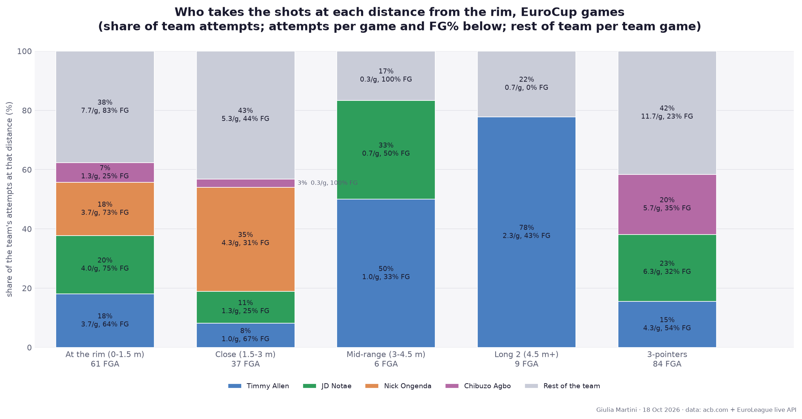
EuroCup games only (3 games, 197 attempts): ACB does not publish shot locations. Main scorers = top 4 by total points. Table: share of each player's own attempts / FG%. The chart shows who takes the team's attempts at each distance.
| Distance | Team | Timmy Allen | JD Notae | Nick Ongenda | Chibuzo Agbo |
|---|---|---|---|---|---|
| At the rim (0-1.5 m) | 31% / 72% | 30% / 64% | 32% / 75% | 46% / 73% | 18% / 25% |
| Close (1.5-3 m) | 19% / 41% | 8% / 67% | 11% / 25% | 54% / 31% | 5% / 100% |
| Mid-range (3-4.5 m) | 3% / 50% | 8% / 33% | 5% / 50% | 0% / - | 0% / - |
| Long 2 (4.5 m+) | 5% / 33% | 19% / 43% | 0% / - | 0% / - | 0% / - |
| 3-pointers | 43% / 32% | 35% / 54% | 51% / 32% | 0% / - | 77% / 35% |
Attempts per game (FG%) by player
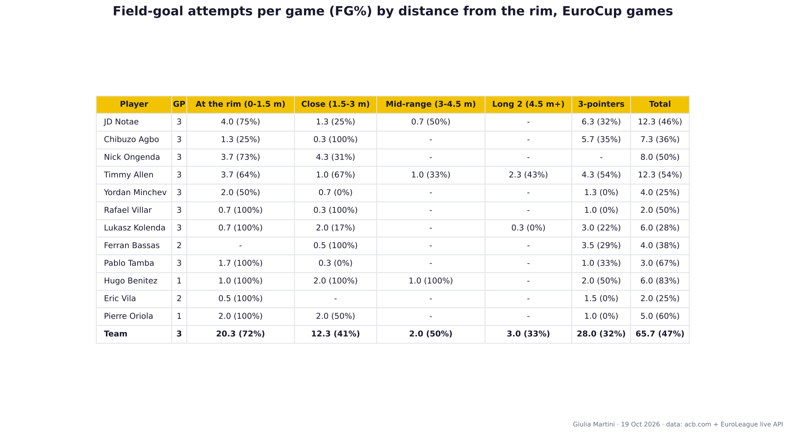
Top 12 by minutes; attempts per EuroCup game played, FG% in brackets.
| Player | GP | At the rim (0-1.5 m) | Close (1.5-3 m) | Mid-range (3-4.5 m) | Long 2 (4.5 m+) | 3-pointers | Total |
|---|---|---|---|---|---|---|---|
| JD Notae | 3 | 4.0 (75%) | 1.3 (25%) | 0.7 (50%) | - | 6.3 (32%) | 12.3 (46%) |
| Chibuzo Agbo | 3 | 1.3 (25%) | 0.3 (100%) | - | - | 5.7 (35%) | 7.3 (36%) |
| Nick Ongenda | 3 | 3.7 (73%) | 4.3 (31%) | - | - | - | 8.0 (50%) |
| Timmy Allen | 3 | 3.7 (64%) | 1.0 (67%) | 1.0 (33%) | 2.3 (43%) | 4.3 (54%) | 12.3 (54%) |
| Yordan Minchev | 3 | 2.0 (50%) | 0.7 (0%) | - | - | 1.3 (0%) | 4.0 (25%) |
| Rafael Villar | 3 | 0.7 (100%) | 0.3 (100%) | - | - | 1.0 (0%) | 2.0 (50%) |
| Lukasz Kolenda | 3 | 0.7 (100%) | 2.0 (17%) | - | 0.3 (0%) | 3.0 (22%) | 6.0 (28%) |
| Ferran Bassas | 2 | - | 0.5 (100%) | - | - | 3.5 (29%) | 4.0 (38%) |
| Pablo Tamba | 3 | 1.7 (100%) | 0.3 (0%) | - | - | 1.0 (33%) | 3.0 (67%) |
| Hugo Benitez | 1 | 1.0 (100%) | 2.0 (100%) | 1.0 (100%) | - | 2.0 (50%) | 6.0 (83%) |
| Eric Vila | 2 | 0.5 (100%) | - | - | - | 1.5 (0%) | 2.0 (25%) |
| Pierre Oriola | 1 | 2.0 (100%) | 2.0 (50%) | - | - | 1.0 (0%) | 5.0 (60%) |
| Team | 3 | 20.3 (72%) | 12.3 (41%) | 2.0 (50%) | 3.0 (33%) | 28.0 (32%) | 65.7 (47%) |
True Shooting and PIR
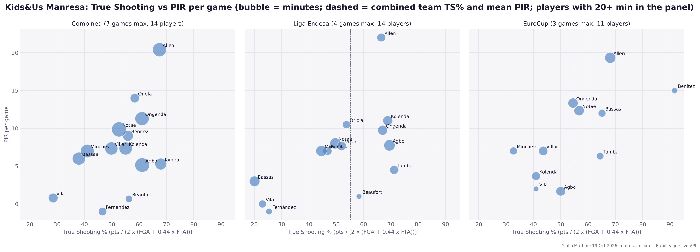
All box-score data of both competitions. Liga Endesa has no missing data here: PIR is computed from the box score and matches the rating published by ACB and EuroLeague for every player-game. Only players with 20+ minutes in the panel are shown.
| Player | Panel | GP | Min | TS% | PIR/g |
|---|---|---|---|---|---|
| Timmy Allen | Combined | 5 | 128 | 67.5 | 20.4 |
| Pierre Oriola | Combined | 3 | 59 | 58.4 | 14.0 |
| Nick Ongenda | Combined | 7 | 132 | 61.1 | 11.3 |
| JD Notae | Combined | 7 | 149 | 52.7 | 9.9 |
| Hugo Benitez | Combined | 4 | 77 | 55.9 | 9.0 |
| Lukasz Kolenda | Combined | 6 | 115 | 55.1 | 7.3 |
| Rafael Villar | Combined | 6 | 115 | 49.9 | 7.3 |
| Yordan Minchev | Combined | 7 | 122 | 41.1 | 7.0 |
| Ferran Bassas | Combined | 6 | 114 | 38.0 | 6.0 |
| Pablo Tamba | Combined | 7 | 91 | 68.0 | 5.3 |
| Chibuzo Agbo | Combined | 7 | 142 | 61.1 | 5.1 |
| Eric Vila | Combined | 5 | 61 | 28.6 | 0.8 |
| Lucas Beaufort | Combined | 6 | 33 | 56.2 | 0.7 |
| Gerard Fernández | Combined | 4 | 46 | 46.6 | -1.0 |
Shot charts of the main scorers
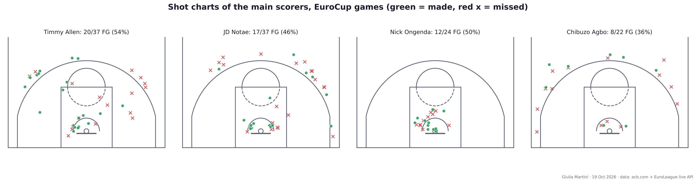
Comments
Anyone with a GitHub account can comment here; the comments are kept as a GitHub issue of the repository, one per page.